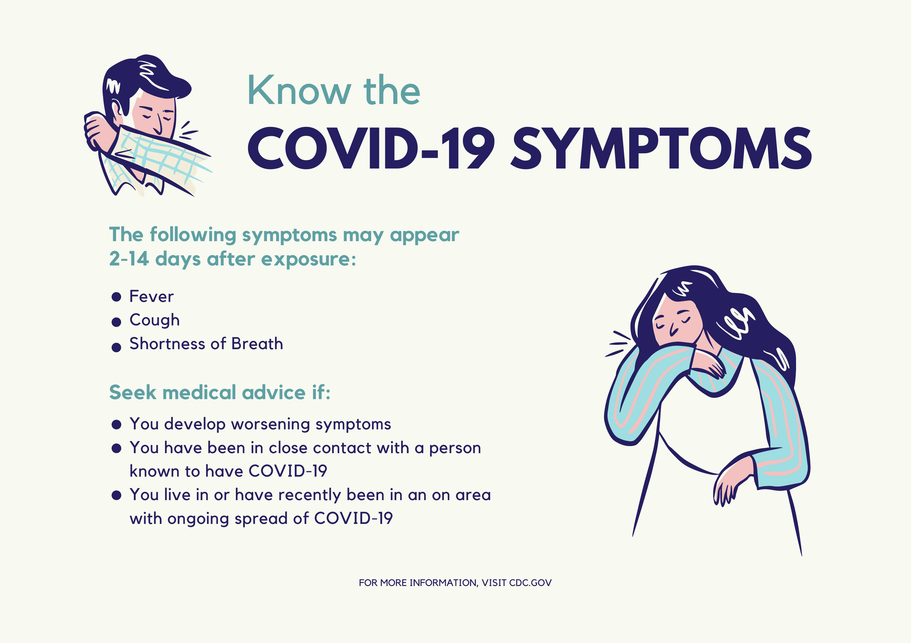
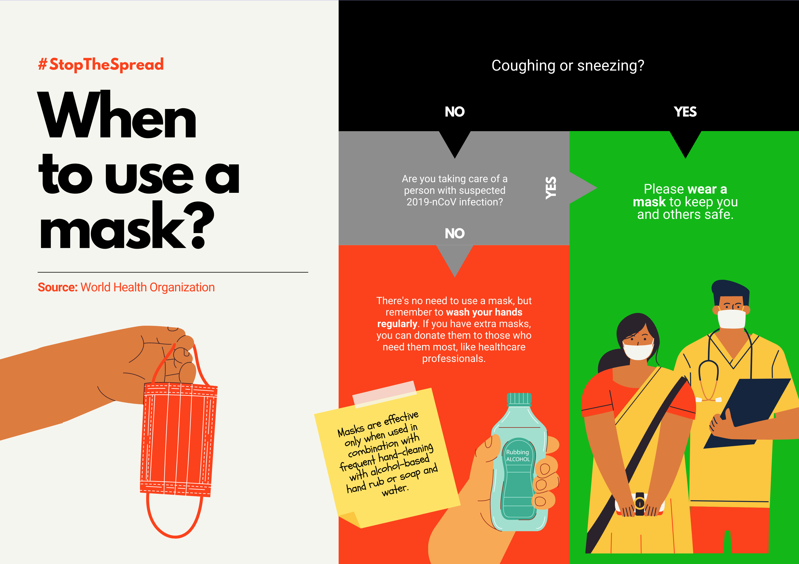

Daftar rumah sakit di solo dan daerah sekitarnya. Berikut kami tampilkan beberapa rumah sakit yang berada di daerah solo. Selain itu, juga daerah yang mengelilinginya. Secara lengkap, nomor telepon dan alamatnya.
Desember 20, 2021
| 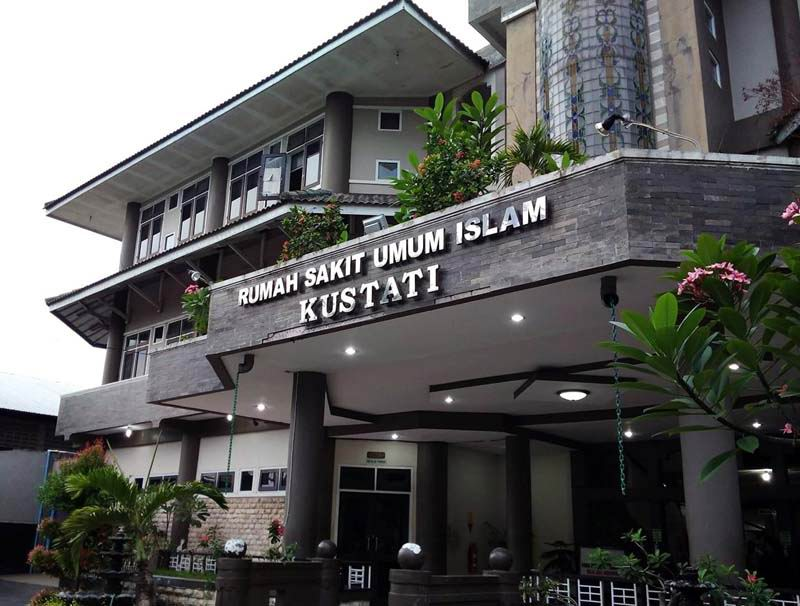 | Rumah Sakit Islam KustatiAlamat: Jalan Kapten Mulyadi No.249, Pasar Kliwon, Ps. Kliwon, Kota Surakarta, Jawa Tengah 57118 Jam buka: Buka 24 jam Telepon: (0271) 643013. Provinsi: Jawa Tengah. |
||
| 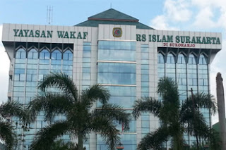 | Rumah Sakit Islam SurakartaAlamat: Jl. General Ahmad Yani, Pabelan, Kartasura,Kabupaten Sukoharjo, Jawa Tengah 57162 Jam buka: Buka 24 Telepon: (0271) 710571. |
||
| 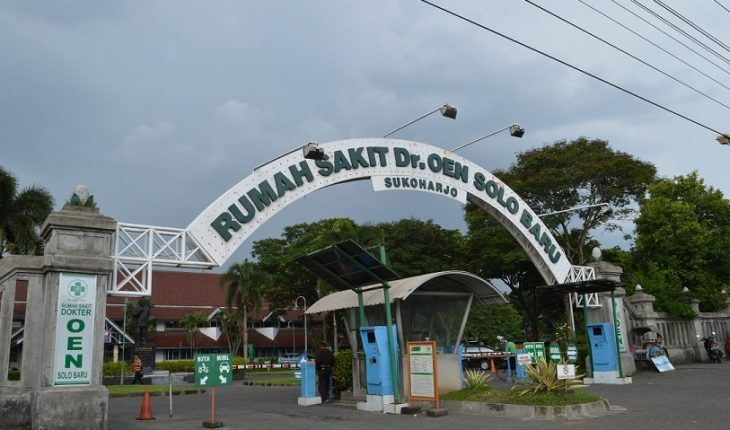 | Rumah Sakit Dr. Oen Surakarta.Alamat: Jl. Brigjend Katamso No.55 Jateng, Jebres, Kota Surakarta, Jawa Tengah 57128. Telepon: (0271) 643139. |
||
| 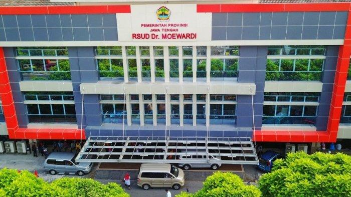 | Rumah Sakit Umum Daerah Dr. Moewardi.Alamat: Jalan Kolonel Sutarto No.132, Jebres, Kota Surakarta, Jawa Tengah 57126. Jam buka: Buka 24 jam. Telepon: (0271) 634634. |
||
| 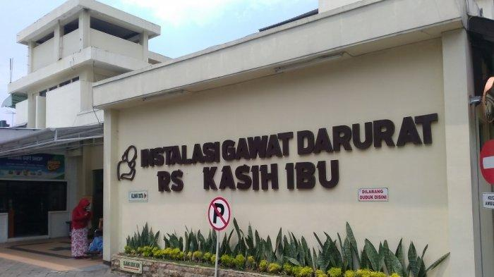 | RS Kasih Ibu Surakarta.Alamat: Jl. Brigjend Slamet Riyadi No.404, Purwosari, Laweyan, Kota Surakarta, Jawa Tengah 57142 Jam buka: Buka 24 jam. Telepon: (0271) 714422. |
||
| 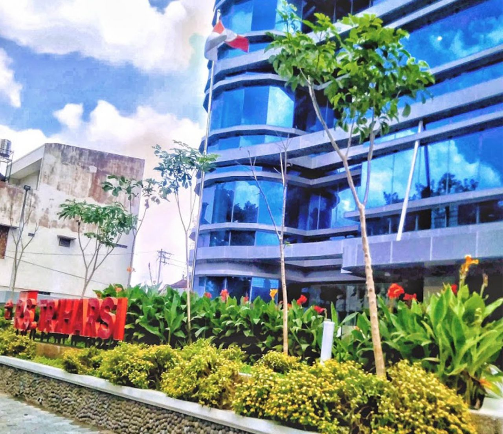 | RS Triharsi.Alamat: Jl. Monginsidi No.28, Gilingan, Banjarsari, Kota Surakarta, Jawa Tengah 57134. Telepon: (0271) 656903. |
||
| 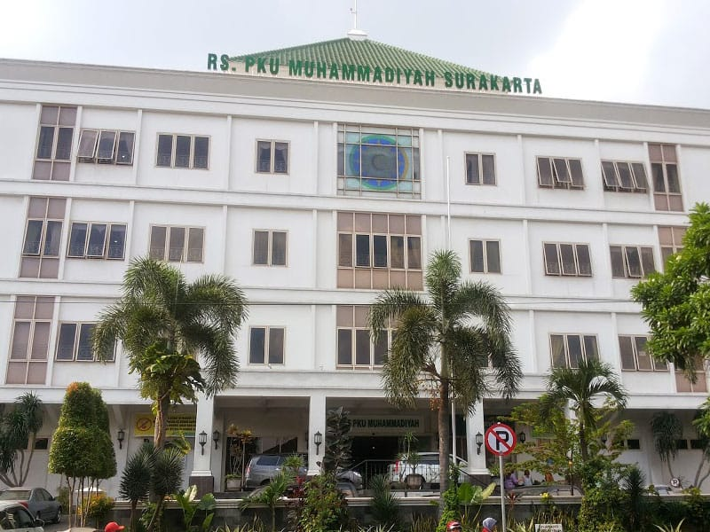 | RS PKU Muhammadiyah.Alamat: Jalan Ronggowarsito No.130, Timuran, Banjarsari, Timuran, Banjarsari, Kota Surakarta, Jawa Tengah 57131. Jam buka: Buka 24 jam Telepon: (0271) 714578. |
||
| 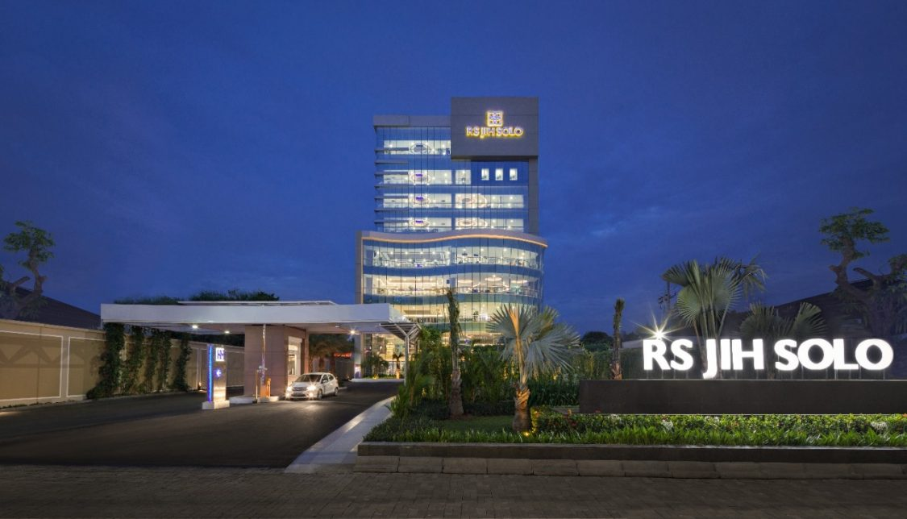 | RS Jih SurakartaAlamat : Jl.Adi Sucipto No.118, Jajar, Kec.Laweyan, Kota Surakarta, Jawa Tengah 57144 Jam buka : Buka 24 jam Telepon :(0271) 7469100 |
||
| 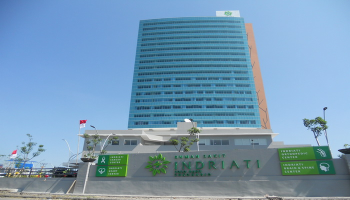 | Rumah Sakit Indriati Solo Baru Sukoharjo.Alamat: Jl. Palem Raya, Langenharjo, Grogol, Langenharjo, Grogol, Kabupaten Sukoharjo, Jawa Tengah 57552. Jam buka: Buka 24 jam Telepon: (0271) 5722000. |
||
| 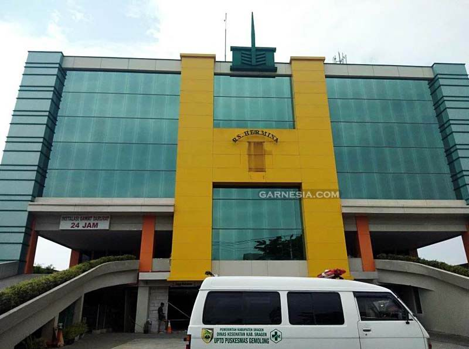 | Rumah Sakit Hermina Surakarta.Alamat: Jl. Kolonel Sutarto No.16, Jebres, Kota Surakarta, Jawa Tengah 57126. Jam buka: Buka 24 jam. Telepon: (0271) 638989. |
||
| 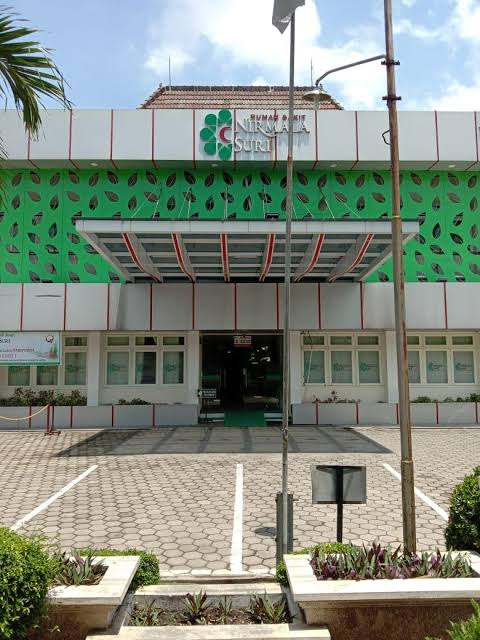 | RS Nirmala Suri.Alamat: Jl. Solo – Sukoharjo Km. 9, Bendosari, Kecamatan Sukoharjo, Sidorejo, Bendosari, Kabupaten Sukoharjo, Jawa Tengah 57527. Telepon: (0271) 592192. | ||
| 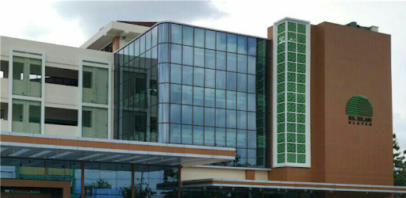 | RS Islam Klaten.Rumah sakit umum di Klaten, Jawa Tengah. Alamat: Jl. Klaten – Solo KM.04, Belang Wetan, Klaten Utara, Kabupaten Klaten, Jawa Tengah 57438. Jam buka: Buka 24 jam Telepon: (0272) 322252. |